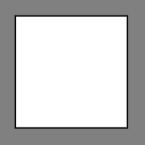
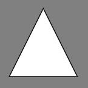
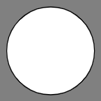
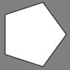
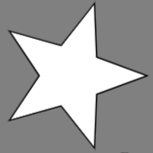

<!DOCTYPE html>
<html>
    <head>
        <title>Shapes inference task</title>
        <script src="jspsych/jspsych.js"></script>
        <script src="p5/p5.min.js"></script>
        <script src="jspsych/plugin-fullscreen.js"></script>
        <script src="jspsych/plugin-html-keyboard-response.js"></script>
        <script src="jspsych/plugin-html-slider-response.js"></script>
        <script src="jspsych/plugin-image-keyboard-response.js"></script>
        <script src="jspsych/plugin-instructions.js"></script>
        <script src="jspsych/plugin-preload.js"></script>
        <script src="jspsych/plugin-shapes.js"></script>
        <script src="jspsych/plugin-survey-text.js"></script>
        <script src="jspsych/plugin-survey-multi-choice.js"></script>
        <script src="jatos.js"></script>
        <link href="https://fonts.googleapis.com/css2?family=Corben&family=Quicksand&display=swap" rel="stylesheet">
        <link href="https://fonts.googleapis.com/css2?family=Noto+Sans+Mono&display=swap" rel="stylesheet">
        <link href="style.css" rel="stylesheet" type="text/css"></link>
    </head>
    <body></body>
    <script>
        
        // initialise JsPsych
        const jsPsych = initJsPsych({
        on_finish: function() {
        jsPsych.data.addProperties(jatos.urlQueryParameters);
        jsPsych.data.addProperties(
            { practice_rare_shape_loops: practice_rare_shape_loop,
              comprehension_visits: comprehension_visits
            }
        )
        var resultJson = jsPsych.data.get().json();
        var resultCsv = jsPsych.data.get().csv();
        jatos.submitResultData(resultCsv)
            .then(()=>
            jatos.uploadResultFile(resultJson, `${window.subject_identifier}_data_${Date.parse(Date())}.json`, jatos.startNextComponent))
        }});

        practice_rare_shape_loop = 0;
        followed_rare_shape = false;
        comprehension_visits = 0;       

        // define timeline 
        var timeline = [];

        // preload shapes for instructions
        var preload = {
            type: jsPsychPreload,
            images: ['img/circle.png','img/triangle.png','img/diamond.png','img/pentagon.png','img/square.png','img/star.png']
        };
        timeline.push(preload);

        // fullscreen
        var full_screen = {
            type: jsPsychFullscreen,
            fullscreen_mode: true,
            message: `<p>The experiment will switch to full screen mode when you press the button below. Please do not exit the full screen mode until the end of the experiment.</p>`
        };
        timeline.push(full_screen);

        // instructions 
        var format_instructions = (s) => {return(s+'<footer>Use the right arrow key on your keyboard to navigate to the next screen.</footer>')};

        var instructions = {
            type: jsPsychInstructions,
            pages: [
            format_instructions(`<p>Welcome!</p>
               <p>Please read the following instructions carefully.</p>`),
                format_instructions(`<p>Two shapes, chosen from the following selection, were drawn on a blackboard: </p>
                    <p><div class = "row">
                        <div class = "column">
                            
                        </div>
                        <div class = "column">
                            
                        </div>
                        <div class = "column">
                            
                        </div>
                        <div class = "column">
                            
                        </div>
                        <div class = "column">
                            
                        </div>
                    </div></p>
                    <p>The shapes were chosen according to the following rule: <em>if the left shape is a circle, the right shape will be a triangle</em>.</p>`),
                format_instructions(`<p>You will see several scenarios where two shapes were drawn on the blackboard according to this rule, <em>but</em> one of the shapes will be hidden.</p>
                    <p>Your task is to guess what the hidden shape is. It will be one of the two options presented to you underneath the blackboard.</p>
                    <p>You will be asked to pick one of the options.</p>`),
                format_instructions(`<p>After you make your guess, you will be asked to rate how confident you are in your decision.</p>`),
                format_instructions(`<p>Try to answer as accurately as possible.</p>`)
            ],
            show_clickable_nav: false
        };
        timeline.push(instructions);

        // trial to show shape, additionally  tag responses as correct/incorrect
        var test = {
            type: jsShapes,
            left_shape: jsPsych.timelineVariable('left_shape'),
            right_shape: jsPsych.timelineVariable('right_shape'),
            occluder: jsPsych.timelineVariable('occluder'),
            choices: ['s','g'],
            on_finish: function(data){
            }
        };

        // array with different trial types and corresponding correct responses 
        var stimuli = [  
            { left_shape: 'circle', right_shape: 'triangle', occluder: 'right' }, 
            { left_shape: 'circle', right_shape:'triangle', occluder:'left' },  
            { left_shape: 'not-circle', right_shape: 'not-triangle', occluder: 'right' }, 
            { left_shape: 'not-circle', right_shape:'not-triangle', occluder: 'left' }
        ];

        // create little block timeline 
        var block = {
        timeline: [test],
        timeline_variables: stimuli,
        repetitions: 4,
        randomize_order: true
        }
        timeline.push(block);

        // instructions for star trial 
        var instructions_rare_shape = {
        type: jsPsychInstructions,
        pages: [
            format_instructions(`<p>Well done!</p>
            <p>Now, there is some additional information. Once in a while, a star shape was drawn on the blackboard:</p> 
            <p><div class = "row">
                
            </div></p>
            <p>However, this only happened very rarely.</p>`)
        ],
        show_clickable_nav: false
        }
        timeline.push(instructions_rare_shape)

        // comprehension check
        var multichoice_rare_shape = {
            type: jsPsychSurveyMultiChoice,
            questions: [{
                prompt: `How likely is it a star was drawn on the blackboard?`,
                options: ['1. Much more likely than all other shapes.',
                          '2. Much less likely than all other shapes.',
                          '3. About as likely as all other shapes.'
                ],
                name: 'multichoice_rare_shape'
            }],
            on_finish: function(data){
                followed_rare_shape = data.response.multichoice_rare_shape[0]=='2';
                comprehension_visits++
            }
        };

        // explain again
        var explain_again_rare_shape = {
            type: jsPsychInstructions,
            title: 'Let\'s try again',
            pages: function() {
                return [format_instructions(`<h1>Let's try again</h1>
                <p>Your response to the comprehension question was incorrect. Let's try again.</p>
                <p>Remember, the star was drawn very rarely.</p>`)]
            },
            show_clickable_nav: false
        }

        // loop around if fail comprehension
        var practice_rare_shape_loop_node = {
            timeline: [
                {timeline: [explain_again_rare_shape], conditional_function: function() {return practice_rare_shape_loop>0}},
                {timeline: [multichoice_rare_shape]}
            ],
            loop_function: function(data){
                if(followed_rare_shape){
                    return false;
                } else {
                    practice_rare_shape_loop++
                    return true;
                }
            }
        };
        timeline.push(practice_rare_shape_loop_node);

        // final trial instruction
        var instructions2 = {
            type: jsPsychInstructions,
            pages: [
                format_instructions(`<p>That is correct! You are now ready to make one final guess.</p>
                <p>Remember, the rule is: <em>if the left shape is a circle, the right shape will be a triangle</em>.</p>`)
            ],
            show_clickable_nav: false
        };
        timeline.push(instructions2);

        // final trial
        var test_rare_shape = {
            type: jsShapes,
            left_shape: jsPsych.timelineVariable('left_shape'),
            right_shape: jsPsych.timelineVariable('right_shape'),
            occluder: jsPsych.timelineVariable('occluder'),
            choices: ['s','g'],
            rare_option: jsPsych.timelineVariable('rare_option'),
            on_finish: function(data){
            }
        };

        // rare shape as option for MT trial
        var stimulus = [  
            { left_shape: 'not-circle', right_shape: 'not-triangle', occluder: 'left', rare_option: true }, 
        ];

        // little block  
        var block_rare_shape = {
        timeline: [test_rare_shape],
        timeline_variables: stimulus,
        repetitions: 1,
        }
        timeline.push(block_rare_shape);

        // ask participants for feedback 
        var worker_comments = {
        type: jsPsychSurveyText,
        preamble: '<h1>Your Thoughts<h1>',
        questions: [{
        prompt: `We would appreciate if you could share any thoughts you had about the experiment, or anything we should take into account when analyzing your data.`,
        placeholder: "your comments here",
        rows:8,
        columns:60,
        name: 'worker_comments'
        }]
        }
        timeline.push(worker_comments);

        // thank you message 
        var Thank_you = {
                type: jsPsychInstructions,
                pages: [
                `<p>Thank you!</p>
                <p>Your contribution will help us better understand how logical reasoning relates to perception. </p>
                <p>Please press the right arrow key to get a completion code</p>`
                ],
                show_clickable_nav: false
            };
        timeline.push(Thank_you);

        jatos.onLoad(function() {
            jsPsych.run(timeline); 
        });

    </script>
</html>